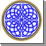

Pactum De Singularis Caelum
Covenant of One Heaven

PrinciplesArticle 36 - Gold, Precious Metals & Gems
Gold, precious metals and gems have held great value within civilizations for thousands of years as symbols of Ecclesiastical and Temporal Power as well as objects of perceived value, suitable as a direct form of money or underwriting for a currency system.
Yet gold, precious metals such as silver and gems such as diamonds have also been responsible for great misery and injury as the god of the Roman Caesars in opposition to the Divine Creator (as referenced in the New Testament); the false god of the Israelites (golden calf) in opposition to Yah; the false god of the MenesHeh in opposition to Sabaoth (Satan); one meaning of the “G” of Freemasonry; the cursed medium into which the “salvaged souls” by the banks and courts of the Roman Cult falsely condemned spirits since 1543; the wrecker of civilizations and cause of great depressions as “lawful” money.
No other medium than gold has caused so much suffering, so much war or grief. No other medium or material has been associated with so many curses. No other object has been proven to be the very worst material for underwriting “lawful” money through indisputable evidence of its use by a small cabal of bankers and merchants to beguile, usurp and collapse empires with it. Yet despite all these warnings, including more scriptural warnings than any other substance across more faiths than any other material, Gold remains a substance worshipped by hundreds of millions, in absolute contradiction and defiance to their faith.
While erased from the history books, the first verifiable Gold mines and goldsmith work originates from Ireland - a source of the majority of the Gold for the early and middle Bronze Age. Ireland and specifically the first priest class of Western Civilization, the Cuilliaéan or "Holly", are also the source and origin of the religious origin associated with Gold.
As the Cuilliaéan (Druid Priest Class) exported spiritual reasoning to all corners of the known world from the 5th Century BCE onwards, so too their artifacts of Gold were considered to possess supernatural power. One of the most excellent examples of Cuilliaéan spiritual gold work still preserved are the "Wizard" or Vizier hats (one known as the Berlin Gold Hat) detailed extremely accurate lunar settings and astronomical information.
Under the Hyksos Kings of Egypt, exiled from their reconquered Ebla and themselves connected to both Ireland and the ancient Ebla Priest-King lines, Gold as a sacred medium grew to new heights.
However, following the successful defeat of the last absolute Hyksos Pharaoh Akhenaten by the swamp pirates of the Nile Delta, the Menes, rose to power as the Ramses and set about squandering and abusing the massive wealth of Egypt, causing even greater hardship and economic ruin.
Seti, the son of Ramses I was responsible for capturing the former leading court families of Akhenaten from Ugarit and returning them to Egypt now as slaves instead of senior officials. However, under Ramses II from 1260 BCE, these supernatural beings who survived the plagues of Egypt were forced to rob the tombs of their former masters, defiling their very ancestors to melt down the phenomenal gold of the Hyksos to pay for the extravagance of the Menes pirates.
Thus the curse of gold began with hundreds of thousands of small “bars” being minted as the first “lawful money” all carrying millions of curses associated with the desecration of the Cuilliaéan (Holy) Hyksos Kings. Fromt his point on, the followers of Akhenaten as Moses, became known as the Israelites or the “unclean/cursed”.
Since the infusion of millions of curses into gold as a medium of “lawful money” by the Ramses Menes pirates ordering the Israelites to “melt down” the history of the Hyksos, three groups have dominated the control of gold, with only one being immune to the curse of gold – the Cuilliaéan; the other two being the Israelites and the swamp pirates being the Menes (later Menes-Heh and their descendents the White Khazars) as well as the elite anti-semitic parasites families of the Venetians and Black Khazars.
During captivity under the swamp pirate Ramses pharaohs, the Israelites were the first group to begin worshipping gold as its own god, in the form of the “golden calf” in an open rejection of Yah and the Divine Creator. The calf was later also adopted as a false god by the Menes-Heh themselves.
This open rejection in defiance of the Divine Creator – a kind of reverse curse claimed against all creation of the Divine – finds its modern equivalent in the “G” of Freemasonry and the highest realization of those that attain the status of enlightenment as a “Gewe” that the G standards for the god of Gold as a curse and hatred against the Divine, the world and harmony.
The worship of G being the Golden Symbol of Freemasonry, being the embodiment of the Golden Calf is also the origin of the Parasite - a mental illness perpetuated through the manual of mental illness known as the Talmud that continues to infect the world today and spellbinds worshippers of Gold to rather destroy the world than save it, to sacrifice their own families for their earthly "god".
While the use of gold as a form of currency and portal wealth dates back to the time of the swamp pirate Menes Ramses Kings of Egypt, the production of gold and any association with the fictional concept of debt was always considered public until Rome around 60 to 62 BCE. Indeed, the Greek city states and many other civilizations were minting and using gold coins as currency for hundreds of years prior, such as the city of Lydia, without causing economic depression.
The historic difference is what took place in 60 to 62 BCE in Rome when Julius Caesar sought to “purchase” control of the Roman Empire with the help of the Menes pirates now merchants and bankers, who controlled the Temple of Juno. In exchange for “privatizing” the money supply of Rome from base metal coinage to gold and granting them exclusive and perpetual production of coinage, they agreed to underwrite his campaigns.
Thus 60 to 62 BCE represents the actual “zero point” for the creation of lawful money by the Menes bankers/merchants by seizing control of the public money supply to make it private, using gold as the spell and illusion. Within two years the whole Roman Empire was in financial crisis and Civil War erupted. So with the creation of “lawful money” – by permitting an elite class of pirates with historically no conscience, ethics or beliefs to control the money, using gold, Empires could be brought to their knees. The Temple of Juno was called Juno Moneta and is the origin of the word “Money” and the first Private Central Bank.
It is an indisputable fact that Gold remains the father god of the Parasite, the descendants of the swamp pirates known as Menes of the Nile and the land pirates known as the Khazars.
Their obsession, devotion and duty to their primary god and lesser gods in the form of other precious metals and gems have seen them fanatically contol as many sources and to continue to use their stockpiles to corrupt, to entrap and to ruin empires over the centuries.
As gold is the primary god of these pirates and parasites, they stand in open defiance of all spiritual forces both traditionally light and dark who have now united under this new covenant.
As a mark of this most sacred covenant, it is time to slay this false idol, this false god and all the false gods of this pantheon.
Just as when salt loses its taste it is worthless, so it is hereby commanded by the full authority and power of the Divine Creator and all Angels, Demons, Saints and Spirits of United Heaven that all forms of precious and rare metals including (but not limited to) gold, silver, platinum and palladium and all precious and rare gems are fobidden to be used as a direct medium of money.
Nor may these rare metals and gems be used as a store of value or any form of underwriting of currency or negotiable instruments of any kind.
Therefore, let it be known throughout Heaven and across the Earth that the great stockpiles of gold and precious metals of the Pirates and Parasites, their great stores of precious gems are hereby rendered worthless and may never again be used to corrupt the currencies and systems of money of the world.
Where a currency or money system defies Heaven and seeks to use gold or precious metals or gems as a source of underwriting or store of value, such currencies are hereby rendered worthless and without lawful form.